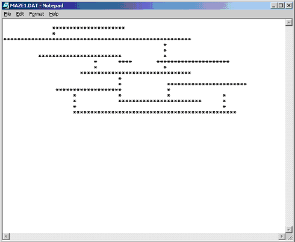

CSC 122: Computer Science II, Fall 2005
Project 1
Ramping up with Java - Traversing a maze
Deadline: Friday, September 2, 5:00 p.m.
- Overview:
- This project deals with the classic "mouse in a maze" problem.
You are to write a program that reads in a maze from a text file
and stores it in a two-dimensional array. The program should then
preprocess the maze to mark (in the array, not on the screen) all
of the useless cells. Finally if a path exists, the maze will be
displayed in a terminal window with the path clearly marked.
Otherwise a message indicating that there is no path should be
displayed.
- Specification:
-
Maze file format:
- The filename will be of the form *.dat and will be a standard
text file.
- Each line in the file corresponds to a row in the matrix.
- An asterisk in the line represents a FREE space (potentially
on a path) and a space represents a WALL.
- The length of a line is the number of characters to the last
asterisk. So the first and last lines of the file will have
length 0. Thus before reading the file you should initialize
all cells of the maze array to WALL to facilitate loading the
array from the file. The maze array will not have any USELESS
cells until it has been preprocessed (see below).
- An example maze file is displayed below:

Displaying the maze:
- Display a WALL cell as a '|' character
- Display a USELESS cell as a '?' character
- Display a FREE cell as a ' ' character.
The algorithm:
- Initialize the maze.
- Read the maze file one line at a time and set the next row of
the maze accordingly.
- Preprocess the maze as follows -
- Examine each FREE cell of the maze array. If 3 of its
4 neighbors are WALL or USELESS make the cell
USELESS.
- Repeat the above step until you make a pass that
results in no cells being marked USELESS.
- At this point you either have a path, indicated by the FREE
cells, or you have no path. To determine if you have a path,
traverse it by following the FREE cells through the array and
successfully (or not) reaching a free cell on its right hand
side. This kind of technique (making an optimal decision at
each step) is referred to as a greedy algorithm.
- The Project and Getting Started:
-
The maze project:
- The project should consist of three classes – Driver, Maze,
and Infile.
- Driver (client) – Creates instances of Infile and Maze and
invokes appropriate methods from each.
- Maze (server/client) – Initializes the maze array, loads
the maze array from the input file, preprocesses the array,
determines if there is a path through the maze, displays
the maze accordingly.
- Infile (server) – This class will be given to you in the
maze project.
- The project can be copied from I:\csc122A\public\maze
- Implement the project using the test driven implementation
strategy: first build a test system and stubbed
implementation of each class.
- Test on the mazes stored in the project file, Maze1.Dat
and Maze2.Dat.
Standards:
Your project should be well-written, neatly-formatted, modular,
and well-documented.
Grading:
- Getting filename and opening file (15 pts)
- Reading the maze (20 points)
- Preprocessing correctly (20 points)
- Handling the greedy step correctly (traversing the maze
after preprocessing) (20 points)
- Detecting maze with no solution (10 points)
- Documentation and style (15 points)

 DePauw University,
Computer Science Department,
Fall 2005
DePauw University,
Computer Science Department,
Fall 2005
Maintained by Brian Howard
(bhoward@depauw.edu).
Last updated